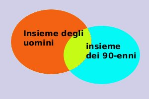

|
Mostriamo che, mediante la teoria degli insiemi, e' possibile evidenziare la verita' o meno del giudizio universale negativo: Partiamo dal nostro giudizio: Esiste un x tale che x e' un uomo ed x non ha 90 anni  Considero gli insiemi P(x) = { x : x e' un uomo } Q(x) = { x : x ha 90 anni } considero la negazione della seconda Q(x)___= { x : x non ha 90 anni } la scrittura implica che l'oggetto x e' contenuto nell'insieme P(x) e non e' contenuto nell'insieme Q(x) quindi e' vera solamente se x appartiene alla differenza fra P(x) e Q(x) x In figura e' in rosso la parte che ci interessa (gli uomini che non sono novantenni) |